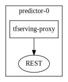
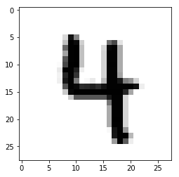

This page was generated from examples/models/tfserving-mnist/tfserving-mnist.ipynb.
Seldon and TensorFlow Serving MNIST Example¶
This example shows how you can combine Seldon with Tensorflo Serving. We will use a Seldon Tensorflow Serving proxy model image that will forward Seldon internal microservice prediction calls out to a Tensorflow serving server.
The example will use the MNIST digit classification task with the example MNIST model.
Setup¶
[ ]:
!pip install seldon-core
[1]:
%matplotlib inline
import json
import sys
from random import randint, random
import numpy as np
import requests
from matplotlib import pyplot as plt
from tensorflow.examples.tutorials.mnist import input_data
sys.path.append("../../../notebooks")
import grpc
import tensorflow as tf
from tensorflow.core.framework.tensor_pb2 import TensorProto
from visualizer import get_graph
from seldon_core.proto import prediction_pb2, prediction_pb2_grpc
[34]:
def gen_image(arr):
two_d = (np.reshape(arr, (28, 28)) * 255).astype(np.uint8)
plt.imshow(two_d, cmap=plt.cm.gray_r, interpolation="nearest")
return plt
def download_mnist():
return input_data.read_data_sets("MNIST_data/", one_hot=True)
def rest_predict_request(endpoint, data):
request = {"data": {"ndarray": data.tolist()}}
response = requests.post(
"http://" + endpoint + "/predict",
data={"json": json.dumps(request), "isDefault": True},
)
return response.json()
def rest_transform_input_request(endpoint, data):
request = {"data": {"ndarray": data.tolist()}}
response = requests.post(
"http://" + endpoint + "/transform-input",
data={"json": json.dumps(request), "isDefault": True},
)
return response.json()
def rest_transform_output_request(endpoint, data):
request = {"data": {"ndarray": data.tolist()}}
response = requests.post(
"http://" + endpoint + "/transform-output",
data={"json": json.dumps(request), "isDefault": True},
)
return response.json()
def rest_request_ambassador(
deploymentName, namespace, endpoint="localhost:8003", arr=None
):
payload = {
"data": {
"names": ["a", "b"],
"tensor": {"shape": [1, 784], "values": arr.tolist()},
}
}
response = requests.post(
"http://"
+ endpoint
+ "/seldon/"
+ namespace
+ "/"
+ deploymentName
+ "/api/v0.1/predictions",
json=payload,
)
print(response.status_code)
print(response.text)
def grpc_request_internal(data, endpoint="localhost:5000"):
datadef = prediction_pb2.DefaultData(tftensor=tf.make_tensor_proto(data))
request = prediction_pb2.SeldonMessage(data=datadef)
channel = grpc.insecure_channel(endpoint)
stub = prediction_pb2_grpc.ModelStub(channel)
response = stub.Predict(request=request)
return response
def gen_mnist_data(mnist):
batch_xs, batch_ys = mnist.train.next_batch(1)
chosen = 0
gen_image(batch_xs[chosen]).show()
data = batch_xs[chosen].reshape((1, 784))
return data
[3]:
mnist = download_mnist()
WARNING:tensorflow:From <ipython-input-2-04b637d7613e>:7: read_data_sets (from tensorflow.contrib.learn.python.learn.datasets.mnist) is deprecated and will be removed in a future version.
Instructions for updating:
Please use alternatives such as official/mnist/dataset.py from tensorflow/models.
WARNING:tensorflow:From /home/clive/anaconda3/lib/python3.6/site-packages/tensorflow/contrib/learn/python/learn/datasets/mnist.py:260: maybe_download (from tensorflow.contrib.learn.python.learn.datasets.base) is deprecated and will be removed in a future version.
Instructions for updating:
Please write your own downloading logic.
WARNING:tensorflow:From /home/clive/anaconda3/lib/python3.6/site-packages/tensorflow/contrib/learn/python/learn/datasets/base.py:252: _internal_retry.<locals>.wrap.<locals>.wrapped_fn (from tensorflow.contrib.learn.python.learn.datasets.base) is deprecated and will be removed in a future version.
Instructions for updating:
Please use urllib or similar directly.
Successfully downloaded train-images-idx3-ubyte.gz 9912422 bytes.
WARNING:tensorflow:From /home/clive/anaconda3/lib/python3.6/site-packages/tensorflow/contrib/learn/python/learn/datasets/mnist.py:262: extract_images (from tensorflow.contrib.learn.python.learn.datasets.mnist) is deprecated and will be removed in a future version.
Instructions for updating:
Please use tf.data to implement this functionality.
Extracting MNIST_data/train-images-idx3-ubyte.gz
Successfully downloaded train-labels-idx1-ubyte.gz 28881 bytes.
WARNING:tensorflow:From /home/clive/anaconda3/lib/python3.6/site-packages/tensorflow/contrib/learn/python/learn/datasets/mnist.py:267: extract_labels (from tensorflow.contrib.learn.python.learn.datasets.mnist) is deprecated and will be removed in a future version.
Instructions for updating:
Please use tf.data to implement this functionality.
Extracting MNIST_data/train-labels-idx1-ubyte.gz
WARNING:tensorflow:From /home/clive/anaconda3/lib/python3.6/site-packages/tensorflow/contrib/learn/python/learn/datasets/mnist.py:110: dense_to_one_hot (from tensorflow.contrib.learn.python.learn.datasets.mnist) is deprecated and will be removed in a future version.
Instructions for updating:
Please use tf.one_hot on tensors.
Successfully downloaded t10k-images-idx3-ubyte.gz 1648877 bytes.
Extracting MNIST_data/t10k-images-idx3-ubyte.gz
Successfully downloaded t10k-labels-idx1-ubyte.gz 4542 bytes.
Extracting MNIST_data/t10k-labels-idx1-ubyte.gz
WARNING:tensorflow:From /home/clive/anaconda3/lib/python3.6/site-packages/tensorflow/contrib/learn/python/learn/datasets/mnist.py:290: DataSet.__init__ (from tensorflow.contrib.learn.python.learn.datasets.mnist) is deprecated and will be removed in a future version.
Instructions for updating:
Please use alternatives such as official/mnist/dataset.py from tensorflow/models.
Create MNIST Model Repository¶
You will need tensorflow installed to run these steps.
Train Tensorflow MNIST example model¶
[4]:
!git clone https://github.com/tensorflow/serving.git
Cloning into 'serving'...
remote: Enumerating objects: 36, done.
remote: Counting objects: 100% (36/36), done.
remote: Compressing objects: 100% (24/24), done.
remote: Total 17758 (delta 18), reused 19 (delta 12), pack-reused 17722
Receiving objects: 100% (17758/17758), 4.77 MiB | 3.13 MiB/s, done.
Resolving deltas: 100% (13224/13224), done.
Checking connectivity... done.
[5]:
!cd serving/tensorflow_serving/example && python mnist_saved_model.py --training_iteration=100000 ../../../mnist-model
Training model...
Successfully downloaded train-images-idx3-ubyte.gz 9912422 bytes.
Extracting /tmp/train-images-idx3-ubyte.gz
Successfully downloaded train-labels-idx1-ubyte.gz 28881 bytes.
Extracting /tmp/train-labels-idx1-ubyte.gz
Successfully downloaded t10k-images-idx3-ubyte.gz 1648877 bytes.
Extracting /tmp/t10k-images-idx3-ubyte.gz
Successfully downloaded t10k-labels-idx1-ubyte.gz 4542 bytes.
Extracting /tmp/t10k-labels-idx1-ubyte.gz
2019-05-03 14:41:16.119184: I tensorflow/core/platform/cpu_feature_guard.cc:141] Your CPU supports instructions that this TensorFlow binary was not compiled to use: AVX2 FMA
training accuracy 0.9178
Done training!
Exporting trained model to b'../../../mnist-model/1'
Done exporting!
Copy Model to Google Bucket¶
[6]:
# CHANGE THIS TO YOUR OWN CHOSEN GOOGLE BUCKET NAME
%env MODEL_REPOSITORY_BUCKET=gs://seldon-tfserving-store
env: MODEL_REPOSITORY_BUCKET=gs://seldon-tfserving-store
[7]:
!gsutil mb ${MODEL_REPOSITORY_BUCKET}
Creating gs://seldon-tfserving-store/...
[8]:
!gsutil cp -r mnist-model ${MODEL_REPOSITORY_BUCKET}
Copying file://mnist-model/1/saved_model.pb [Content-Type=application/octet-stream]...
Copying file://mnist-model/1/variables/variables.data-00000-of-00001 [Content-Type=application/octet-stream]...
Copying file://mnist-model/1/variables/variables.index [Content-Type=application/octet-stream]...
| [3 files][ 48.6 KiB/ 48.6 KiB]
Operation completed over 3 objects/48.6 KiB.
Test From GCP Cluster¶
Setup Seldon Core¶
Instructions also online.
Run MNIST Inference Graph¶
[23]:
!helm install tfserving-mnist tfserving-mnist --namespace seldon --set tfserving.model_base_path=${MODEL_REPOSITORY_BUCKET}/mnist-model
NAME: tfserving-mnist
LAST DEPLOYED: Fri May 3 18:51:07 2019
NAMESPACE: seldon
STATUS: DEPLOYED
RESOURCES:
==> v1alpha2/SeldonDeployment
NAME AGE
tfserving-mnist 1s
[1]:
!helm template tfserving-mnist tfserving-mnist --namespace seldon --set tfserving.model_base_path=${MODEL_REPOSITORY_BUCKET}/mnist-model > mnist.json
[25]:
!sed '1,2d' mnist.json > tmp.json
[26]:
get_graph("tmp.json")
[26]:

[27]:
!pygmentize mnist.json
---
# Source: tfserving-mnist/templates/mnist_tfserving_deployment.json
{
"apiVersion": "machinelearning.seldon.io/v1alpha2",
"kind": "SeldonDeployment",
"metadata": {
"labels": {
"app": "seldon"
},
"name": "tfserving-mnist",
"namespace": "seldon"
},
"spec": {
"name": "tf-mnist",
"predictors": [
{
"componentSpecs": [{
"spec": {
"containers": [
{
"image": "seldonio/tfserving-proxy:0.1",
"name": "tfserving-proxy"
},
{
"args": [
"/usr/bin/tensorflow_model_server",
"--port=7001",
"--model_name=mnist-model",
"--model_base_path=gs://seldon-models/tfserving/mnist-model"
],
"image": "gcr.io/kubeflow-images-public/tensorflow-serving-1.7:v20180604-0da89b8a",
"name": "mnist-model",
"ports": [
{
"containerPort": 7001,
"protocol": "TCP"
}
],
"resources": {
"limits": {
"cpu": "4",
"memory": "4Gi"
},
"requests": {
"cpu": "1",
"memory": "1Gi"
}
},
"securityContext": {
"runAsUser": 1000
}
}
],
"terminationGracePeriodSeconds": 1
}
}],
"graph": {
"name": "tfserving-proxy",
"endpoint": { "type" : "REST" },
"type": "MODEL",
"children": [],
"parameters":
[
{
"name":"grpc_endpoint",
"type":"STRING",
"value":"localhost:7001"
},
{
"name":"model_name",
"type":"STRING",
"value":"mnist-model"
},
{
"name":"model_output",
"type":"STRING",
"value":"scores"
},
{
"name":"model_input",
"type":"STRING",
"value":"images"
},
{
"name":"signature_name",
"type":"STRING",
"value":"predict_images"
}
]
},
"name": "mnist-tfserving",
"replicas": 1
}
]
}
}
Port forward Ambassador
kubectl port-forward $(kubectl get pods -n seldon -l app.kubernetes.io/name=ambassador -o jsonpath='{.items[0].metadata.name}') -n seldon 8003:8080
[36]:
data = gen_mnist_data(mnist)
data = data.reshape((784))
rest_request_ambassador(
"tfserving-mnist", "seldon", endpoint="localhost:8003", arr=data
)

200
{
"meta": {
"puid": "h7n5gedmned98nt4l0s3m71mtl",
"tags": {
},
"routing": {
},
"requestPath": {
"tfserving-proxy": "seldonio/tfserving-proxy:0.1"
},
"metrics": []
},
"data": {
"names": ["t:0", "t:1", "t:2", "t:3", "t:4", "t:5", "t:6", "t:7", "t:8", "t:9"],
"tensor": {
"shape": [1, 10],
"values": [1.5026679900387307E-10, 7.648504052326643E-10, 2.311240223207278E-6, 5.463987235998502E-6, 0.9917333126068115, 5.872762812941801E-6, 4.898904748529276E-8, 1.9045433873543516E-5, 2.1104186089360155E-5, 0.008212855085730553]
}
}
}
Analytics and Load Test¶
[21]:
!helm install seldon-core-analytics ../../../helm-charts/seldon-core-analytics \
--set grafana_prom_admin_password=password \
--set persistence.enabled=false \
--namespace seldon
NAME: seldon-core-analytics
LAST DEPLOYED: Mon Sep 24 15:52:34 2018
NAMESPACE: seldon
STATUS: DEPLOYED
RESOURCES:
==> v1/Service
NAME TYPE CLUSTER-IP EXTERNAL-IP PORT(S) AGE
alertmanager ClusterIP 10.19.253.159 <none> 80/TCP 1s
grafana-prom NodePort 10.19.251.82 <none> 80:30690/TCP 1s
prometheus-node-exporter ClusterIP None <none> 9100/TCP 1s
prometheus-seldon ClusterIP 10.19.245.167 <none> 80/TCP 1s
==> v1/Secret
NAME TYPE DATA AGE
grafana-prom-secret Opaque 1 2s
==> v1/ServiceAccount
NAME SECRETS AGE
prometheus 1 2s
==> v1/Job
NAME DESIRED SUCCESSFUL AGE
grafana-prom-import-dashboards 1 0 1s
==> v1beta1/Deployment
NAME DESIRED CURRENT UP-TO-DATE AVAILABLE AGE
alertmanager-deployment 1 1 1 0 1s
grafana-prom-deployment 1 1 1 0 1s
prometheus-deployment 1 1 1 0 1s
==> v1beta1/DaemonSet
NAME DESIRED CURRENT READY UP-TO-DATE AVAILABLE NODE SELECTOR AGE
prometheus-node-exporter 1 1 0 1 0 <none> 1s
==> v1/Pod(related)
NAME READY STATUS RESTARTS AGE
grafana-prom-import-dashboards-wzl55 0/1 ContainerCreating 0 1s
alertmanager-deployment-557b99ccf8-m27mm 0/1 ContainerCreating 0 1s
grafana-prom-deployment-dd84b7788-gmdkc 0/1 ContainerCreating 0 1s
prometheus-node-exporter-pnv9k 0/1 ContainerCreating 0 1s
prometheus-deployment-78dd89b44f-7t62q 0/1 ContainerCreating 0 1s
==> v1/ConfigMap
NAME DATA AGE
alertmanager-server-conf 1 2s
grafana-import-dashboards 7 2s
prometheus-rules 4 2s
prometheus-server-conf 1 2s
==> v1beta1/ClusterRole
NAME AGE
prometheus 2s
==> v1beta1/ClusterRoleBinding
NAME AGE
prometheus 2s
NOTES:
NOTES: TODO
[22]:
!kubectl label nodes $(kubectl get nodes -o jsonpath='{.items[0].metadata.name}') role=locust
node "gke-cluster-2-default-pool-54fbe785-wmcb" labeled
[23]:
!helm install loadtest seldon-core-loadtesting \
--namespace seldon \
--repo https://storage.googleapis.com/seldon-charts \
--set locust.script=mnist_rest_locust.py \
--set locust.host=http://tf-mnist:8000 \
--set oauth.enabled=false \
--set locust.hatchRate=1 \
--set locust.clients=1 \
--set loadtest.sendFeedback=1 \
--set locust.minWait=0 \
--set locust.maxWait=0 \
--set replicaCount=1 \
--set data.size=784
NAME: loadtest
LAST DEPLOYED: Mon Sep 24 15:52:43 2018
NAMESPACE: seldon
STATUS: DEPLOYED
RESOURCES:
==> v1/ReplicationController
NAME DESIRED CURRENT READY AGE
locust-slave-1 1 1 0 0s
locust-master-1 1 1 0 0s
==> v1/Service
NAME TYPE CLUSTER-IP EXTERNAL-IP PORT(S) AGE
locust-master-1 NodePort 10.19.255.204 <none> 5557:32342/TCP,5558:30493/TCP,8089:32034/TCP 0s
==> v1/Pod(related)
NAME READY STATUS RESTARTS AGE
locust-slave-1-zncg4 0/1 ContainerCreating 0 0s
locust-master-1-9z8gm 0/1 ContainerCreating 0 0s
You should port-forward the grafana dashboard
kubectl port-forward $(kubectl get pods -n seldon -l app=grafana-prom-server -o jsonpath='{.items[0].metadata.name}') -n seldon 3000:3000
You can then view an analytics dashboard inside the cluster at http://localhost:3000/dashboard/db/prediction-analytics?refresh=5s&orgId=1.
[ ]: